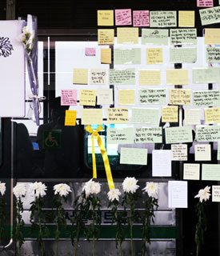
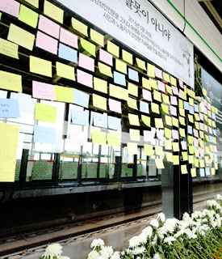

4년간의 포스트잇 보러가기
-

2016년 시민의 목소리
-
2017년 시민의 목소리
-

2018년 시민의 목소리
-
2019년 시민의 목소리
‘구의역참사 4주기 추모위원회’는 이날 구의역 대합실 2층과 승강장 내선 9-4 플랫폼, 유사 재해가 발생했던 성수역 3번 승강장 10-3 플랫폼과 강남역 승강장 10-2번 플랫폼에서 추모식을 진행했다고 밝혔다.
이날 추모식에는 화력발전소에서 홀로 야간 작업을 하다 숨진 고 김용균 씨의 어머니 김미숙씨, 방송계의 노동 착취 현실을 고발하다 세상을 떠난 고 이한빛 CJ ENMPD의 아버지 이용관씨, 공장에서 떨어져 숨진 청년 노동자 고 김태규씨의 누나인 김도연씨와 김군을 추모하는 시민들이 참여했다. 이들은 플랫폼에 국화를 헌화하고 유리벽에는 추모의 메시지를 담은 포스트잇을 붙였다.
추모위원회는 이날 “죽은 자은 있어도, 죽인 자는 없는 현실을 그대로 두고 볼 수 없다”면서 중대재해가 일으킨 기업을 엄중하게 처벌하는 법(중대재해기업처벌법)을 제정해야한다고 촉구했다.
서울 지하철 구의역에서 사고로 숨진 스크린도어 유지보수 업체 직원 김모군, 그리고 2019년 한국지엠 부평공장에서 일하다 숨진 사내하청 비정규직 노동자의 유품에서 모두 컵라면이 발견되어 안타까움을 더했다.
‘구의역참사 4주기 추모위원회’는 이날 구의역 대합실 2층과 승강장 내선 9-4 플랫폼, 유사 재해가 발생했던 성수역 3번 승강장 10-3 플랫폼과 강남역 승강장 10-2번 플랫폼에서 추모식을 진행했다고 밝혔다.
추모위원회는 이날 “죽은 자은 있어도, 죽인 자는 없는 현실을 그대로 두고 볼 수 없다”면서 중대재해가 일으킨 기업을 엄중하게 처벌하는 법(중대재해기업처벌법)을 제정해야한다고 촉구했다.
구의역 4주기를 맞아 추모의 메시지를 남기신다면,어떤 한마디를 남기고 싶으신가요? (최대 40자)
그곳에서는 천천히, 그리고 안전하게
※ 구의역 포트스잇 출처 서울시에서 지난 4년간 시민들이 남기고간 포스트잇을 수거해 보관하였다가 4주기를 맞아 언론에 제공